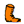
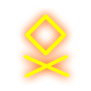

Уникальные
умения фракций
|
Фракция
|
Требуемый
уровень
|
Специальная
постройка в замке
|
Стоимость
постройки
|
Умение
|
|
Рыцари
Рыцарь света
|
3
5
|
Тренировочные
залы
-
|
 |
500 |
-
|
Тренировки
Истинный свет
|
|
Некроманты
Некромант-повелитель
смерти
|
1
5
|
-
|
-
|
Некромантия
Поднятие
мертвецов
|
|
Маги
Маг-разрушитель
|
3
5
|
Кузница
артефактов
-
|
|
500 |
-
|
Мини-артефакты
Власть магии
|
|
Эльфы
Эльф-заклинатель
|
3
5
|
Союз рейнджеров
-
|
|
500 |
-
|
Заклятый враг
Энергия леса
|
|
Варвары
Варвар-шаман
Варвар крови
|
1
5
5
|
-
|
-
|
Подготовка к
атаке
Гнев
крови
|
|
Темные эльфы
Темный
эльф-укротитель
|
1
5
|
-
|
-
|
Тёмная защита
Призыв подземных
существ
|
|
Демоны
Демон тьмы
|
1
5
|
-
|
-
|
Открытие врат
ада
Всеобъятная тьма
|
|
Степные
варвары
|
1
|
-
|
-
|
Гнев крови
|
|
Гномы
Гном огня
|
3
5
|
Школа рун
-
|
|
500 |
-
|
Рунная магия
Мастерство колдовства
|
Тренировки
Дисциплинированные рыцари, оплот стабильности Империи, способны
увеличивать численность лучников, мечников и монахов, обучая в
тренировочных залах крестьян и ополченцев. Чем больше армия – тем
больше среди неё способных рекрутов, поэтому эффект тренировок лучше
заметен при высоком боевом уровне героя. Рыцари сильно зависят от
уровня умения и редко переходят в другие фракции для развития
сопротивления к ним.
Истинный свет
Фракционная способность у альтернативного класса рыцарей (вместо
тренировок), увеличивает эффективность заклинаний "Ускорение",
"Каменная кожа", "Карающий удар".
Итоговая сила заклинания вычисляется по
формуле (1+0.02*[ур.умения фракции])*[базовая эффективность заклинания].
Некромантия
Адепты смерти используют древнее искусство некромантии для создания
основы своей могущественной армии: бесчисленного множества скелетов.
Фракционная способность некромантов позволяет им набирать в армию
дополнительное число скелетов или скелетов-лучников, зависящее от
умения героя.
|
Уровень
умения
|
0
|
1
|
2
|
3
|
4
|
5
|
6
|
7
|
8
|
9
|
10
|
11
|
12
|
|
Количество
скелетов из резерва
|
7
|
12
|
18
|
25
|
40
|
65
|
95
|
130
|
170
|
210
|
250
|
290
|
330
|
Поднятие
мертвецов
Фракционная способность у альтернативного класса некромантов (вместо
некромантии), увеличивает эффективность заклинания "Поднятие мертвецов".
Эффективность «Поднятия мертвецов»
увеличивается на 10% за каждый уровень умения фракции.
Применяя «Поднятие мертвецов», здоровье
существ уменьшается на 5% меньше за каждый уровень умения фракции.
После использования «Поднятие мертвецов»,
ход героя наступает на 3% раньше за каждый уровень умения фракции.
Мини-артефакты
При помощи этого умения, маги получают возможность ковать особое
снаряжение для своих существ. Мини-артефакты могут быть надеты только
на боевые отряды. Виды составных частей, их эффект, а также
максимальное количество частей в артефакте зависят от боевого уровня
персонажа и уровня умения фракции магов. Эффект мини-артефактов скрыт
для других игроков и отображается только в бою.
Власть магии
Магам-разрушителям недоступны мини-артефакты; вместо того,
увеличивается атака героя и инициатива его отрядов в зависимости от его
силы магии и знаний:
Параметр нападения героя увеличивается на
{0.3+0.03*[ур. умения фракции]}*{[сила магии]+[знания]};
Параметр инициативы отрядов увеличивается
на {0.1+0.01*[ур. умения фракции]}*{[сила магии]+[знания]}.
Все представители
фракции магов наносят в боях с нейтральными существами повышенный урон
магией:
урон от одиночных заклинаний=обычный
урон*(2+умение мага)/2;
урон от площадных заклинаний=обычный
урон*(площадь заклинания+умение мага)/площадь заклинания.
При вычислении усиления
площадь заклинания "Метеоритный дождь" считается равной 4.
Заклятый враг
Благодаря этому умению, эльфы увеличивают шанс нанесения в бою двойного
урона определенному противнику. Выбрать заклятого врага можно в замке
через здание "Союз рейнджеров".
Шанс нанесения двойного урона: 5%+4%*умение.
Поменять заклятого врага можно в любое
время, количество заклятых врагов равняется 8 при любом уровне умения,
по одному на фракцию.
Отряды эльфов не могут быть выбраны как
враг.
Монстры на охоте автоматически являются
заклятыми врагами, исключая отряды фракции эльфов.
Энергия леса
Фракционная способность у альтернативного класса эльфов (вместо
заклятого врага), даёт герою единицу знаний за каждые четыре единицы
атаки. Также накапливает силу магии во время боя за счёт получения и
нанесения урона.
Накопленная сила магии не может превышать
[Атака Героя]*(70%+3%*[умение Героя]).
Центральным навыком является "Заколдованная стрела" – позволяет
наделить атаку героя дополнительным эффектом в виде заклинания, не
тратя на это ход. При её использовании к заклинанию добавляется 20%
игнорирования магических защит.
Подготовка к атаке
Если отряд не атакует, он накапливает силу для следующей атаки, которая
увеличивает наносимый урон. Увеличение накопленной силы за каждый ход
равно умению героя и в сумме не может превысить 50%.
Например, если один из
отрядов Варвара с пятым умением фракции будет 3 хода перемещаться или
ожидать, он накопит 15% дополнительной силы. И при следующей атаке или
ответном ударе наносимый урон этим отрядом будет на 15% выше.
Тёмная защита
Темные Эльфы испытывают врожденную тягу к магическим силам природы,
связанным с созиданием. В дополнение к накопленным за века знаниям, они
обладают внутренним, интуитивным чувством боя. Благодаря этому, Темные
Эльфы обладают уникальным умением против всех фракций, которое даёт им
защиту в бою равную = (Сила магии + Знания)*([10 + (умение героя)]%).
Например, с 10-м
умением и суммой Силы магии и Знаний равной 30, армия Героя получит + 6
Защиты.
Призыв
подземных существ
Фракционная способность альтернативного класса темных эльфов позволяет
герою призывать на поле боя подземных существ, сражающихся под его
началом. Каждый уровень школы магии открывает доступ к новому виду
существ, а с центральным навыком "Повелитель существ" они становятся
улучшенными. Численность призываемых отрядов зависит от уровня героя и
его умения, одновременно под контролем укротителя может находиться лишь
один призванный отряд, эффективность призыва уменьшается на 10% при
каждом его применении.
|
Школа
магии
|
Призываемые
существа
|
|
1
|
Пауки
Ядовитые пауки
|
|
2
|
Гарпии
Гарпии-ведьмы
|
|
3
|
Бехолдеры
Злобные глаза
|
|
4
|
Тролли
Черные тролли
|
Открытие Врат Ада
Это уникальное умение Демонов, с помощью которого отряды армии вашего
героя смогут вызывать себе дополнительные боевые силы прямо на поле
боя. Количество призванных бойцов напрямую зависит от количества
призывающих - любое демоническое существо под руководством героя
способно призвать подкрепление равное [20%+4%*умение] от текущей
численности отряда. Особенно это умение поможет вам в битвах против
нейтральных противников. Вы сможете отвлекать вражеские отряды
«ненастоящими» воинами, а сами в это время уничтожите их с помощью
основной армии, воспользуетесь магией или просто «задавите массой».
Всеобъятная
тьма
Фракционная способность у альтернативного класса демонов (вместо
открытия врат ада), увеличивает эффективность заклинаний "Замедление",
"Разрушающий луч" и "Слабость".
Итоговая сила заклинания вычисляется по
формуле (1+0.02*[ур.умения фракции])*[базовая эффективность заклинания].
Гнев Крови
У всех существ фракции Степных Варваров, за исключением Виверн и их
улучшений, а также у всех существ классов Варвар-шаман и Варвар крови
есть способность "Бурлящая кровь" и соответствующий ему параметр "Гнев
крови". Если существами с этой способностью командует герой их фракции,
очки Ярости крови накапливаются существами при проведении активных
действий (нападение на противника, передвижение и т.д.) и теряются в
пассивности (отряд выжидает, защищается и т.д.). По мере накопления
очков Ярости крови существа переходят на новый уровень Гнева Крови
(всего их три). Для 1-го уровня Гнева Крови требуется 200 очков, для
2-го – 500 очков и для 3-го – 1000 очков.
Очки Ярости поглощают часть урона, наносимого отряду, частично
расходуясь при этом. Возможный поглощаемый урон зависит от уровня
умения героя и равен:
50%+[умение]*2% для степных варваров;
10%+[умение]% для альтернативных классов
варваров.
По мере перехода на новый уровень Гнева Крови существа получают
дополнительные боевые параметры:
| Существо |
Гнев Крови ур. 1
200 очков
ярости |
Гнев Крови ур. 2
500 очков
ярости |
Гнев Крови ур. 3
1000 очков
ярости |
| Степные гоблины |
+1 |
 +3 +3
Нет 'Предательства' |
'Враг не
сопротивляется' |
| Гоблины-трапперы |
+2 |
 +3 +3
'Калечащее ранение' |
|
|
|
| Кентавры |
+3 |
 +2 +2 |
'Меткость' |
| Кочевые кентавры |
| Боевые кентавры |
| Степные воины |
 +1
+5 |
+3 |
'Оглушающий удар' |
| Степные бойцы |
+2
+5 |
| Вармонгеры |
+8 |
'Бесконечный отпор' |
+12 |
| Шаманки |
+2 |
+7 |
+15 |
| Дочери неба |
+8
 x2 x2 |
x4 |
| Дочери земли |
+3 |
+8 |
+15 |
| Убийцы |
+1
+2 |
+10 |
'Двойной удар' |
| Палачи |
+1
+3 |
| Вожаки |
+1
+2 |
+12 |
| Виверны |
Нет способности 'Бурлящая кровь'. |
| Темные виверны |
|
| Степные циклопы |
+5 |
'Аура страха' |
'Атака страхом' |
| Свободные циклопы |
| Кровоглазые циклопы |
| Существо |
Гнев Крови ур. 1
200 очков
ярости |
Гнев Крови ур. 2
500 очков
ярости |
Гнев Крови ур. 3
1000 очков
ярости |
| Гоблины |
+1 |
+2 |
'Враг не сопротивляется' |
| Гоблины-маги |
+3 |
+2 |
| Гоблины-лучники |
+2
+1 |
'Меткость' |
| Наездники на волках |
+3 |
+1 |
+1 |
| Наездники на кабанах |
'Оглушающий удар' |
| Орки |
+2
+2 |
+1 |
+3 |
| Орки-шаманы |
+2
+3 |
+5 |
| Орки-тираны |
+3
+2 |
+1
+1 |
| Огры |
+10
+4 |
+1 |
+2
+1 |
| Огры маги |
+15
+5 |
+5 |
+3
+2 |
| Огры-ветераны |
| Роки |
+2 |
+7 |
+15
+1 |
| Птицы тьмы |
+7
'Иммунитет к влиянию на разум' |
| Огненные птицы |
+3 |
+10 |
+20
+1 |
| Циклопы |
+5
+5 |
+8 |
+3 |
| Циклопы-генералы |
+7
+7 |
+10 |
+4 |
| Бегемоты |
+7 |
+20 |
+15
+10 |
| Свирепые бегемоты |
+30
'Атака страхом' |
Рунная магия
Строго говоря, это не магия, а специальное умение, доступное только
гномам. Рунная магия накладывается только на своих существ. Когда
подходит очередь хода своего отряда, на него можно наложить рунное
заклинание. На один отряд за бой можно наложить только одну руну. Одну
и ту же руну также можно использовать только один раз за бой. Навык
"Дополнительные руны" позволяет использовать руну второй раз.
Для активации рунной магии необходимо получить как минимум 1-ое умение
фракции гномов. В дальнейшем на каждый новый уровень умения
активируется новая руна:
 |
Руна
берсеркерства.
Требуемое умение фракции: 1
На
11-м умении Гнома дается дополнительная руна.
При следующей атаке отряд нанесет 2 удара. Руна может быть наложена
только в случае, если во время боя было убито хотя бы 1 существо из
отряда. (Точнее так: текущее кол-во существ в отряде меньше, чем кол-во
существ в этом отряде на начало боя).
Эффект руны
снимается после первой атаки отряда: для существ ближнего боя – после
атаки в ближнем бою; для стрелков – после выстрела. При ответных ударах
отряда эффект не срабатывает и не снимается. Если вражеский отряд был
убит с первого удара, то эффект руны не снимается. |
|
Руна
энергии.
Требуемое умение фракции: 2
На
12-м умении Гнома дается дополнительная руна.
Скорость отряда удваивается до конца хода.
Эффект руны
снимается сразу после завершения текущего хода отряда (даже в том
случае, если отряд пропускает ход, делая Оборону или Ожидание). |
 |
Руна
экзорцизма.
Требуемое умение фракции: 3
Со 100%-ной вероятностью снимает все отрицательные эффекты магии тьмы
(только те, которые могут быть сняты заклинанием "Рассеивание").
|
 |
Руна
магического надзора.
Требуемое умение фракции: 4
При нападении на вражеский отряд у него "своруется" (будет убран с
вражеского отряда и наложен на атакующий) один случайный положительный
эффект магии Света. Вероятность срабатывания "воровства" равна 100%.
Эффект руны
снимается при первой атаке отряда. При ответных ударах отряда эффект не
срабатывает и не снимается. Если на вражеский отряд не наложено ни
одного положительного заклинания, то эффект руны "сгорает" при атаке. |
 |
Руна
стихийной невосприимчивости.
Требуемое умение фракции: 5
У отряда появляется иммунитет к заклинаниям двух стихий из списка:
Огонь, Вода, Воздух, Земля. Стихии выбираются случайным образом.
Эффект руны
действует до конца боя. Если у героя есть умения, позволяющие повторно
применить руну, то при следующем наложении этой руны могут "выпасть"
другие стихии. |
 |
Руна
неосязаемости.
Требуемое умение фракции: 6
Сроком на 1 ход (инициатива эффекта = 10) отряд становится бестелесным.
Но эффект снимается перед началом следующего хода отряда.
Таким образом, у
отрядов с инициативой > 10 остаток эффекта "сгорит" при
наступлении следующего хода; а у отрядов с инициативой < 10
эффект закончится еще до наступления их следующего хода. |
|
Руна
воскрешения.
Требуемое умение фракции: 7
Воскрешает 40% убитых существ в отряде. Точнее так: воскрешаемое кол-во
существ в отряде = 0,4 * (кол-во в начале боя – текущее кол-во).
Округление вниз.
Например, в
начале боя в отряде было 100 существ. В текущий момент осталось 10. При
применении руны воскресится (100-10)*0,4 = 36. В отряде станет 10+36 =
46.
Нужно заметить, что воскрешается не 40% HP убитых существ, а именно 40%
единиц убитых существ. Например, если в отряде из 10 существ убито 2,
то они не могут быть воскрешены (40% от 2 = 0,8 и округляется до 0)
независимо от числа оставшихся HP у верхнего существа в отряде. |
|
Руна
громового раската.
Требуемое умение фракции: 8
При атаке или ответном ударе отряда вражеский отряд может быть откинут
в конец ATB-шкалы. Вероятность срабатывания зависит от соотношения сил
отряда, на который наложен эффект, и атакуемого отряда.
Эффект руны
снимается только после успешного срабатывания (т.е., в случае
"оглушения" вражеского отряда). |
 |
Руна
боевой ярости.
Требуемое умение фракции: 9
При следующей атаке отряд будет бить по-очереди все вражеские отряды,
находящиеся вокруг клетки поля боя, с которой будет проводиться атака.
Кроме того, вражеские отряды не будут отвечать на эти удары.
Эффект руны
снимается после атаки отряда (или после серии атак – в случае, когда
атакуется несколько врагов). Если стрелок проводит дистанционную атаку,
то эффект руны "сгорит" впустую. При ответных ударах отряда эффект не
срабатывает и не снимается.
|
|  |
Руна
драконьего обличья.
Требуемое умение фракции: 10
Сроком на 1 ход (инициатива эффекта = 10) отряд получает бонус +100% к
Атаке и Защите и +50% к уменьшению урона от заклинаний. Бонус снимается
перед началом следующего хода отряда. 100%-ный бонус к Атаке и Защите
дается относительно базовых характеристик существа, т.е. Атака и Защита
героя не влияют на этот бонус.
Например, отряд
берсеркеров (его базовые характеристики: 7 Атака, 7 Защита) находится в
армии героя, у которого Атака = 20 и Защита = 20 – итого у берсеркеров
будет 27 Атаки и 27 Защиты. При применении руны Атака берсеркера
возрастет на +7 и Защита – тоже на +7. Итоговые характеристики будут 34
Атака и 34 Защита. 50%-ный к уменьшению урона от заклинаний от руны
перемножается обычным образом с другими бонусами от уменьшения урона от
заклинаний. Руну нельзя применять на огненных и магма
драконов. |
|
Мастерство колдовства
Фракционная способность у альтернативного класса гномов (вместо рунной магии), увеличивает герою единицу силы магии за каждое умение фракции.
Заклинание Огненный шар всегда доступно на базовом уровне.
|
|